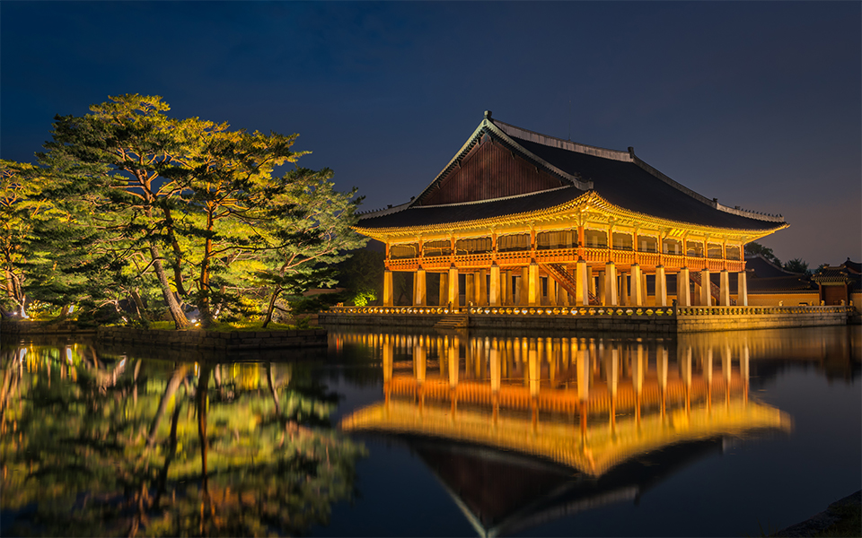

역사와 전통문화 체험

역사의 숨결을 느끼며 아름다운 전통문화를 체험해보세요
조선의 법궁, 경복궁
< 관람 시간 및 요금 안내 >
기관 사정에 따라 관람시간 단축 및 조정이 있을 수 있습니다.

< 경복궁 관람코스 안내 >
< 수문장 교대의식 >
[더 알아보기]
맛집 추천
< 1. 광화문 미진 >
1954년 개업 전통있는 메밀국수집
< 2. 삼청동 수제비 >
잡내 없는 깔끔한 멸치 육수에 띄운 얇게 떼어낸 수제비와 감자전
보는 즐거움
세계유산 창덕궁
< 창덕궁 후원 관람코스 안내 >
< 달빛기행 >
 [더 알아보기]
[더 알아보기]
커피 한 잔의 여유
< 1. 프릳츠 원서점 >
한옥에서 즐기는 특색있는 음료
< 2. 청수당 >
도심 속 정원에서 휴식과 디저틀를 즐기는 오더 메이드 수플레 전문점
보는 즐거움
종로의 북쪽마을, 도심을 흐르는 청계천과 600년 선조의 숨결이 살아숨쉬는 곳
< 한옥 지식 채우기 >
< 한옥체험 Tip >
[더 알아보기]
먹는 즐거움
< 1. 이태리재 >
뇨끼 어란파스타가 너무 맛있는 이탈리안 레스토랑
< 2. 삼청빙수 >
한옥에서 먹는 빙수
인사동
< 미로처럼 얽힌 골목 속 온고지신 >
< 도심 속, 낡지만 귀중한 전통의 물건들이 교류되는 소중한 공간 >
먹는 즐거움
< 1. 개성만두 궁 >
배추와 숙주나물을 넉넉히 넣어 담백하고 삼삼한 맛이 일품인 개성만두
< 2. 꽃, 밥에피다 >
지단을 걷으면 한 송이 꽃이 피어 있는 듯한 보자기비빔밥